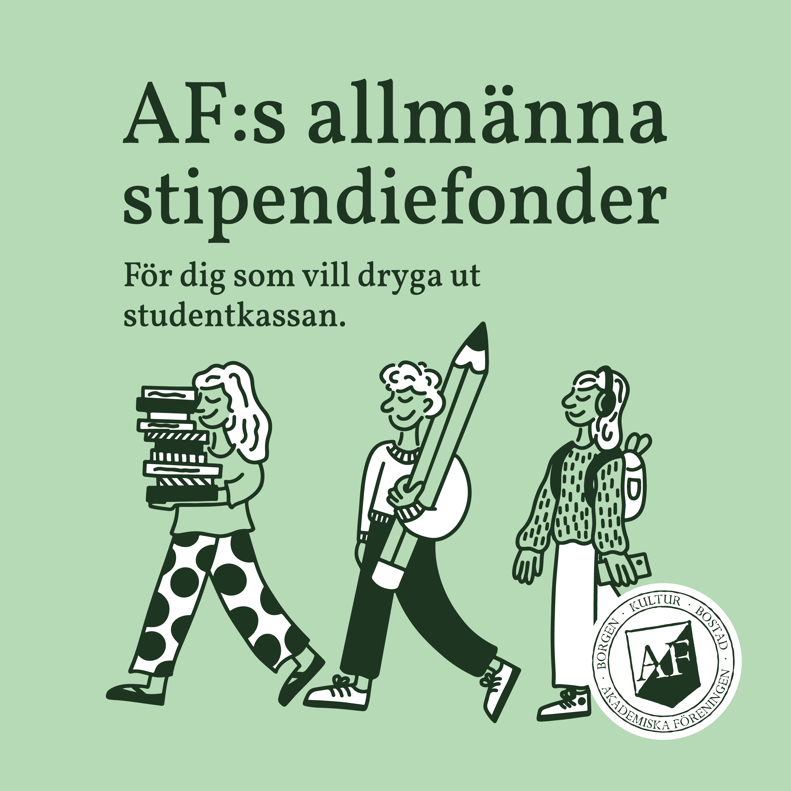
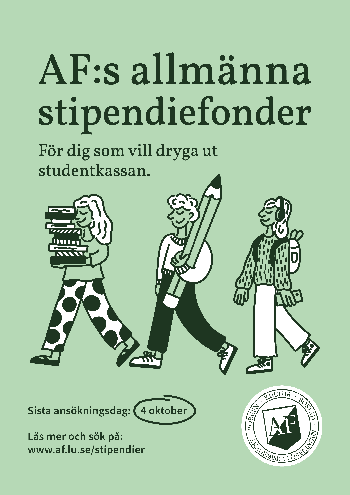

Grafisk design, illustration · Akademiska Föreningen
Allmänna stipendiefonderna
Grafiskt material framtaget för de allmänna stipendiefonderna inom Akademiska Föreningen.
Min roll
Grafisk design, illustration
Uppdragsgivare
Akademiska Föreningen
År
2024
Om projektet
Jag tog fram grafiskt material för Akademiska Föreningens allmänna stipendiefonder, för användning i både sociala medier och tryck. Fonderna syftar till att främja studier.
Målet var att skapa ett tydligt och tilltalande visuellt uttryck som gör informationen om stipendierna lätt att ta till sig och samtidigt väcker intresse hos studenter som kan vara berättigade att söka.
Jag ansvarade för idé, illustration och grafisk utformning samt anpassning av materialet för olika format.

